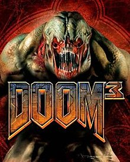
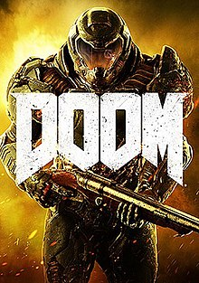
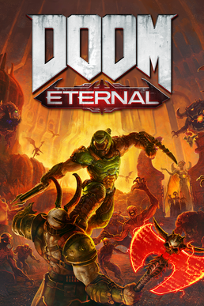

DOOM

Рік випустку:1993
Думгай ходить та вбиває демонів які лізуть з аду сюжета немає
Думгай ходить та вбиває демонів які лізуть з аду сюжета немає
DOOM 2

Рік випустку:1994
Думгай ходить та вбиває демонів які лізуть з аду сюжета немає, але після цієї частини йде DOOM 64 де ми вбиваємо сестру восресительницу
Думгай ходить та вбиває демонів які лізуть з аду сюжета немає, але після цієї частини йде DOOM 64 де ми вбиваємо сестру восресительницу
DOOM 3
Рік випустку:2004
Гра яка відстранина від всіх інших игр ,але сюжет в ній є ми звичайний охоронець який перебуває на марсі де відкривається портал в ад усілякі монстри хочуть нас вбити. але ми відправляємо сігнал SOS та своє часно вбиваємо убер демона за допомогою душе куба.
Гра яка відстранина від всіх інших игр ,але сюжет в ній є ми звичайний охоронець який перебуває на марсі де відкривається портал в ад усілякі монстри хочуть нас вбити. але ми відправляємо сігнал SOS та своє часно вбиваємо убер демона за допомогою душе куба.
DOOM:2016
Рік випустку:2016
Думгай прокидається від принудительного сну у який його ввели демони вбиває одного зних голими руками після чого забирає свою фірмену двостволку та броню та починається весела нарізка демонів до зустрічі з Хайденом який пояснює нам про те чому на Марсі знаходяться демони.Виявляється що портал для них Олівія Пірс яка сама стала демоном але ми її вбиваємо.Перед чим ми збирали для Хайдена аргент єнергію та забрали собі супер компютер ВЕГУ.Але Хайден нас придає та відправляє невідомо
Думгай прокидається від принудительного сну у який його ввели демони вбиває одного зних голими руками після чого забирає свою фірмену двостволку та броню та починається весела нарізка демонів до зустрічі з Хайденом який пояснює нам про те чому на Марсі знаходяться демони.Виявляється що портал для них Олівія Пірс яка сама стала демоном але ми її вбиваємо.Перед чим ми збирали для Хайдена аргент єнергію та забрали собі супер компютер ВЕГУ.Але Хайден нас придає та відправляє невідомо
DOOM Eternal
Рік випустку:2021
Думгай вбиває жреца щоб зупинити вторгнення на землю демонів його ціль вбити всіх жреців щоб зупинити вторгнення щоб знайти наступного жреца йому потрібно зарядити спеціальну батарею у предателя.після зарядки він вбиває другого жреца,але щоб вбити третього він пробиває Марс та знаходить потрібний портал та потрапляє туди де його вперше знайшли на арені де тепер ми деремося з убер демоном.Після победи на яким ми вбваємо останьго жреца ми забираєм з собою ВЕГУ який виявляється ОТЦОМ-создателем всьго світу . А Хайден-серафимом ми вбиваємо Кан Созидетельницу та впускаєм демонів в "РАЙ" спускаємось на Землю та вбиваєм "ИКОНУ ГРЕХА" на цьому гра закінцюється.
Думгай вбиває жреца щоб зупинити вторгнення на землю демонів його ціль вбити всіх жреців щоб зупинити вторгнення щоб знайти наступного жреца йому потрібно зарядити спеціальну батарею у предателя.після зарядки він вбиває другого жреца,але щоб вбити третього він пробиває Марс та знаходить потрібний портал та потрапляє туди де його вперше знайшли на арені де тепер ми деремося з убер демоном.Після победи на яким ми вбваємо останьго жреца ми забираєм з собою ВЕГУ який виявляється ОТЦОМ-создателем всьго світу . А Хайден-серафимом ми вбиваємо Кан Созидетельницу та впускаєм демонів в "РАЙ" спускаємось на Землю та вбиваєм "ИКОНУ ГРЕХА" на цьому гра закінцюється.